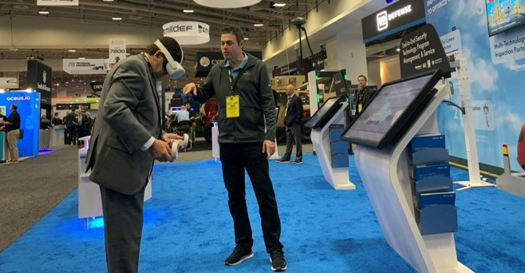

Transforming complex technical parameters into engaging, interactive digital modules.
Below is a selection of enterprise-grade content development projects spanning compliance modules, software simulations, and technical animations. Each project focuses on balancing cognitive load with robust tracking metrics to optimize training retention.

Tools Used: Articulate Storyline, Advanced JavaScript Triggers, Adobe CC
Developed high-fidelity software and systems simulations mirroring complex x-ray screening equipment interfaces. By writing custom JavaScript components embedded within the learning architecture, I engineered advanced variables to track learner accuracy, processing speeds, and real-time step validation.
Business Impact: Reduced hardware onboarding time by eliminating standard system errors during live operations, providing a completely safe sandbox environment for learners to master technical controls.
Tools Used: Microsoft Copilot, Adobe Firefly, Articulate 360
Designed a rapid-development content pipeline integrating modern AI technologies. By leveraging Microsoft Copilot for structured instructional outlining and Adobe Firefly for generating custom, context-specific visual assets, I streamlined the authoring process within Articulate 360 to scale learning tracks efficiently.
Business Impact: Reduced production timelines for complex course materials while significantly boosting visual quality, allowing business units to deploy critical educational updates at the pace of operational change.
Tools Used: Adobe Premiere Pro, Adobe After Effects
Produced specialized, animated video breakdowns explaining hardware component specifications, maintenance procedures, and complex data flows. Designed explicitly for technical environments where precision is absolute, these assets utilize custom text callouts and clear visual pacing to optimize instructional clarity.
Business Impact: Served as on-demand performance support assets on international field deployment loops, boosting post-training accuracy rates and lowering mechanical downtime.